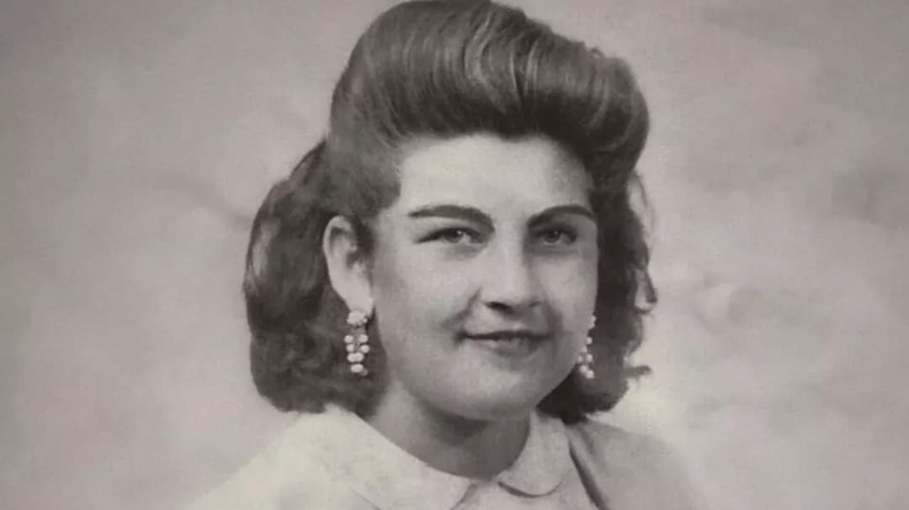
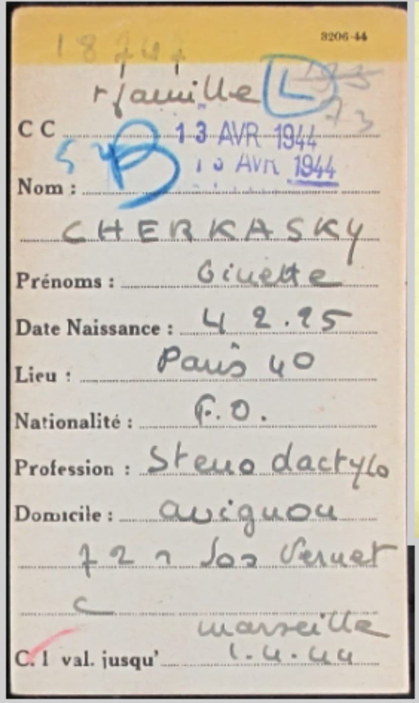
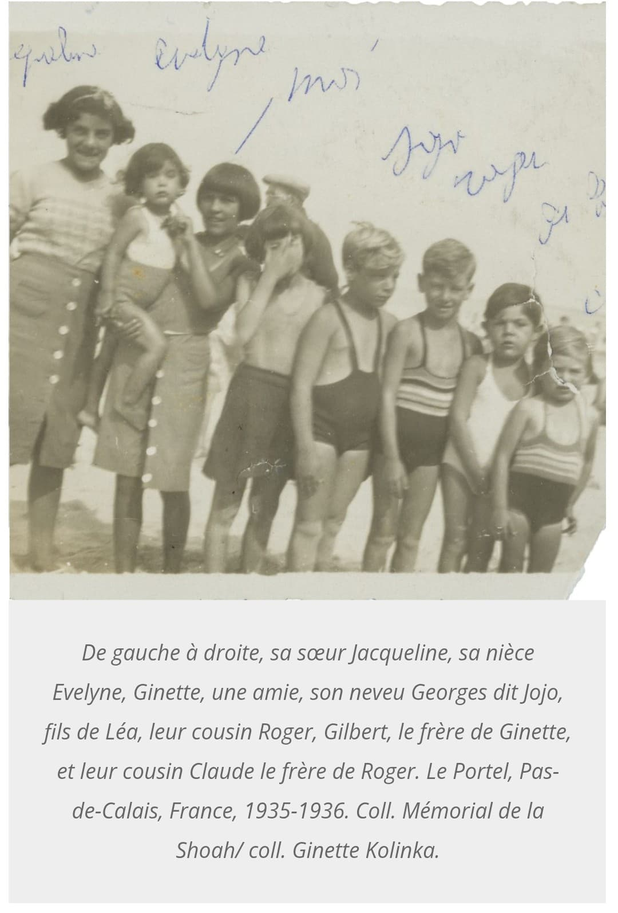
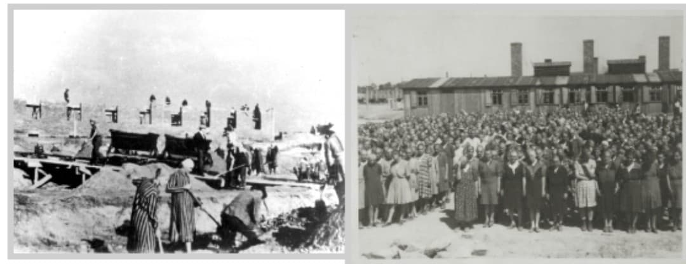
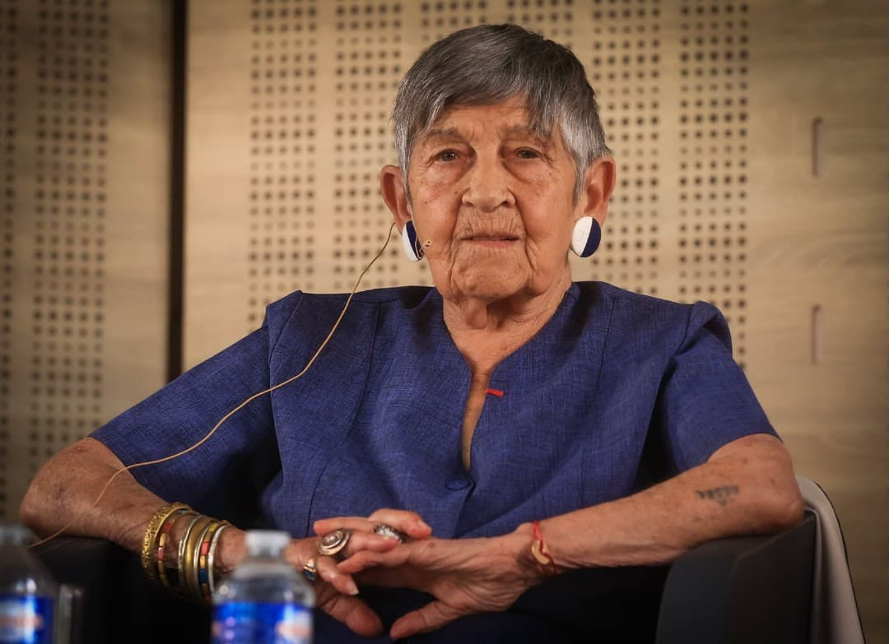

Ginette Kolinka, née Ginette Cherkasky en 1925 à Paris, est l’une des dernières survivantes françaises d’Auschwitz-Birkenau. Déportée en 1944, elle perd son père, son frère et son neveu dans les camps nazis.
Revenue vivante, elle devient une témoin essentielle de la Shoah, parlant dans les écoles, les lycées, les universités, pour transmettre ce qu’elle a vécu et combattre l’oubli. Sa parole est directe, simple, bouleversante.
Ginette grandit dans une famille juive modeste. Elle mène une vie ordinaire dans le Paris des années 1930, jusqu’à l’arrivée des lois antisémites de Vichy et des rafles visant les familles juives.
En 1944, elle est arrêtée avec son père, son frère et son neveu. Tous sont déportés.

En avril 1944, Ginette est déportée à Auschwitz-Birkenau. À son arrivée, elle reçoit le matricule 78599, tatoué sur son bras.
Son père, son frère et son neveu sont assassinés dès leur arrivée. Ginette, elle, est envoyée au travail forcé.

Ginette survit à la faim, au froid, aux humiliations, aux sélections et au travail forcé. Elle est ensuite transférée dans plusieurs camps, dont Bergen-Belsen et Theresienstadt.
Elle décrit souvent la vie dans les camps comme une lutte permanente pour rester vivante, mais aussi pour rester humaine malgré la barbarie.

Ginette est libérée en mai 1945. Elle revient en France, seule survivante de sa famille proche. Elle doit reconstruire sa vie, porter le deuil et vivre avec les souvenirs des camps.
Pendant des décennies, elle garde le silence, comme beaucoup de survivants.
À partir des années 2000, Ginette Kolinka commence à témoigner publiquement. Elle devient une figure majeure de la transmission de la mémoire de la Shoah en France.
Elle accompagne des classes à Auschwitz, participe à des conférences, écrit, et parle avec une simplicité bouleversante de ce qu’elle a vécu.
Son engagement est salué dans tout le pays. Elle reçoit plusieurs distinctions, dont la Légion d’honneur.

Ginette Kolinka est aujourd’hui l’une des dernières grandes voix vivantes de la déportation. Son témoignage permet de comprendre :
– la déportation des Juifs de France
– la vie dans les camps nazis
– la reconstruction après la Shoah
– la nécessité de transmettre pour éviter le retour de la haine
Sa parole est un héritage précieux pour les générations futures.